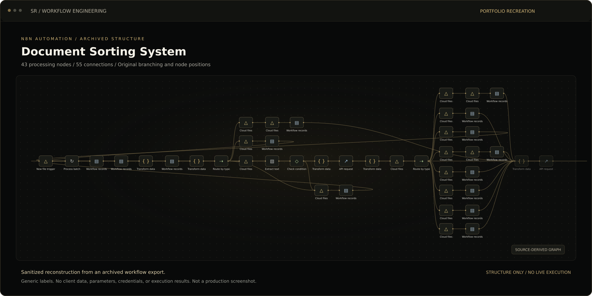
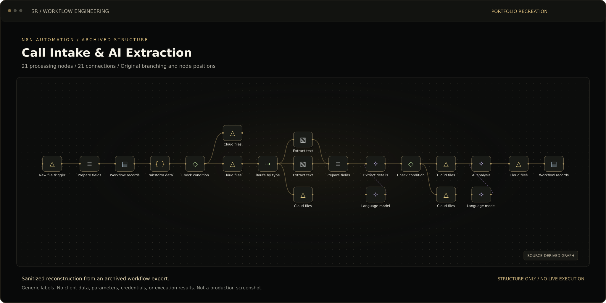
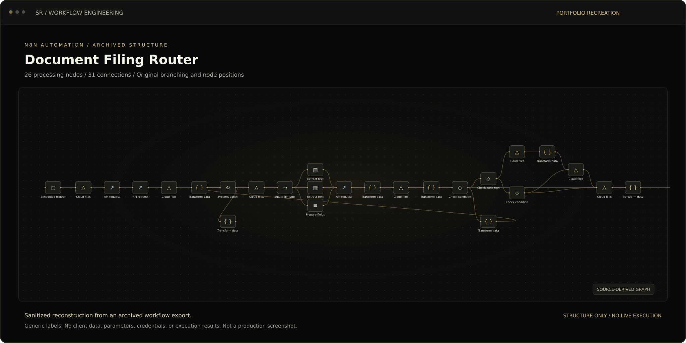
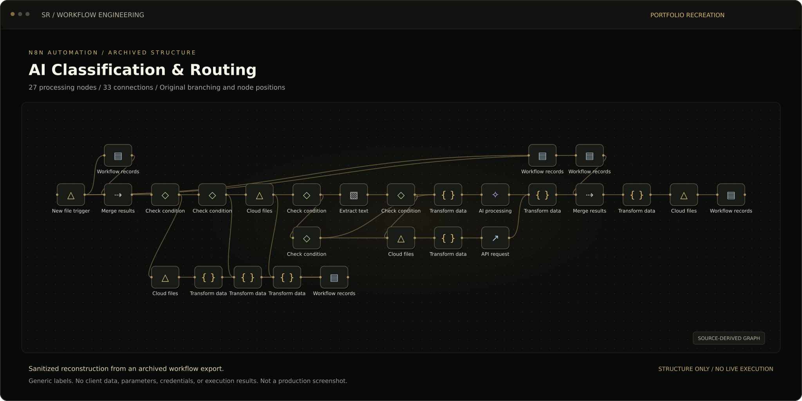
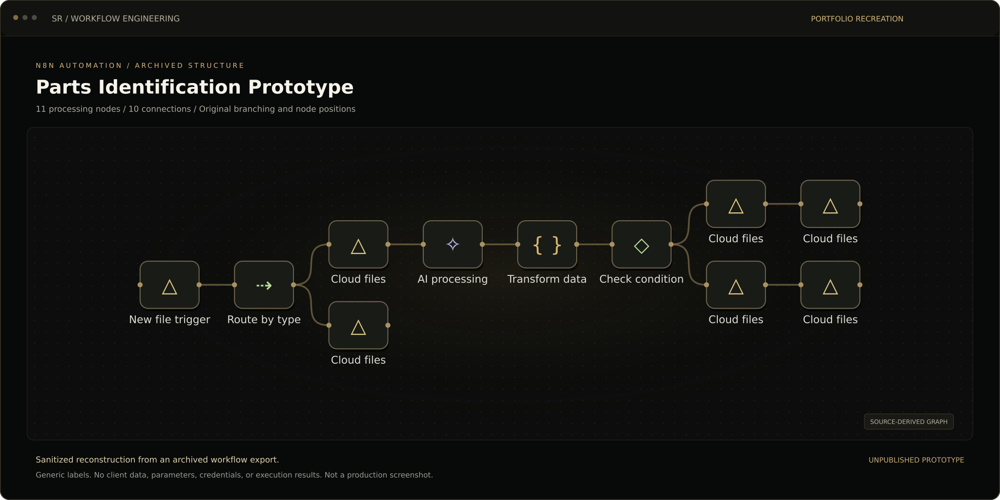

Case studies / 01
Case study 01 · Paid work · Jul–Sep 2026
Auto Body Claims Automation
A connected set of n8n workflows for an auto body shop handling claims: identifying incoming documents, organizing claim folders, routing files, and checking records in Google Drive.
The problem
An auto body shop handling claims needed incoming documents identified, sorted and filed into the correct claim folders. A claim could involve roughly 50–300 documents, based on my operational estimate. Sorting that volume by hand was a major part of call preparation. Staff also needed a clearer view of the records already on file and the documents still missing. The workflows addressed intake, classification, routing, reconciliation and preparation for reviewing claims.
Less time preparing for a call
Average call preparation: about 25 minutes down to about 15 seconds.
My estimate from using the system during day-to-day work; not a formal timing study.
What I built
| Component | What it does |
|---|---|
| 43 n8n workflows | A connected collection of workflows for claims processing, document handling and day-to-day operational tasks. |
| Document intake and identification | Reads incoming files, extracts information, and identifies the document type. |
| Claim-folder organization | Routes documents into the appropriate Google Drive folders and records the filing steps. |
| Call preparation | Brings claim information together so staff can prepare for a call with fewer manual lookups. |
| Record checks and reconciliation | Checks existing records and helps identify missing or unmatched documents. |
| Scheduled processing and monitoring | Runs recurring work and tracks execution usage; unnecessary background runs were reduced during optimization. |
My role
I defined the workflow, designed the architecture, directed AI-assisted implementation, reviewed the output, and handled testing, troubleshooting and optimization.
Inside the workflows
Five selected workflows, recreated from the node positions and connections in the original n8n exports. Generic labels protect client information. Open an image to explore its full-size layout.




